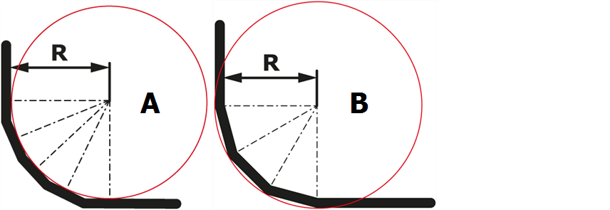

In questa finestra di dialogo sono inseriti dati tecnologici di piegatura per il profilo da piegare. La finestra di dialogo è suddivisa nelle seguenti schede:
In questa scheda è possibile selezionare i dati del profilo o inserirne di nuovi. Dati si applicano a tutte le piegatura del profilo.
Se per le piegatura individuali devono essere utilizzati utensili, metodi di piegatura o lunghezze di piegatura diversi, questi possono essere definiti nella scheda Piegature.
- Sistema di misura
- Materiale
- Spessore lamiera
- Lunghezza di piegatura
- Macchina
- Metodo di piegatura Con metodo di piegatura si definiscono la piegatura a 3 punti, la piegatura in aria e la coniatura.
- Utensile superiore
- Utensili inferiori
- Dettagli utensili superiori/inferiori
Determina il sistema di misura utilizzato (mm/pollici).
Determina il materiale. È possibile selezionare tutti i materiali inseriti in Administrator.
Determina lo spessore della lamiera.
Determina la lunghezza della linea di piegatura.
Determina la piegatrice. È possibile selezionare tutte le macchine inserite in Administrator.
Determina il metodo di piegatura: piegatura in aria, piegatura a 3 punti o coniatura a seconda della piegatrice utilizzata.
Determina l'utensile superiore per la stazione di piegatura. È possibile selezionare tutti gli utensili superiori inseriti in Administrator.
Determina l'utensile inferiore per la stazione di piegatura. È possibile selezionare tutti gli utensili inferiori inseriti in Administrator.
In questa finestra di dialogo vengono elencati ulteriori attributi per gli utensili superiore e inferiore selezionati.
Per ogni taglio è possibile selezionare autonomamente la lunghezza di piegatura, oppure questa può essere presa dal profilo. È inoltre visualizzata la lunghezza dell’elemento per ogni taglio.
In questa scheda è possibile definire i dati per la piega selezionata. Le informazioni riguardano solo la piegatura corrente.
- Angolo
- Lunghezza
- Lunghezza di piegatura
- Metodo di piegatura
- Utensile superiore
- Utensile inferiore
- Utensili radiali...
- Raggio discontinuo Un raggio graduale è la piegatura di un lato il cui angolo e raggio sono raggiunti con l’esecuzione di diverse piegature.
- Raggio
- Accorciamento Per accorciamento si intende la riduzione della misura del lato delle piegature sul pezzo piegato. Con la piegatura è possibile tendere il pezzo in lunghezza. Per questo motivo il lato di una piegatura deve essere ridotto durante il taglio per questa misura. Con l’accorciamento questa tensione viene nuovamente compensata.
Determina l’angolo della piegatura.
Determina la lunghezza del lato selezionato.
Determina la lunghezza della linea di piegatura. È possibile specificare un proprio valore o accettare il valore del taglio.
Info: L'opzione come il taglio riprende la lunghezza di piegatura dalla scheda Taglio.
Determina il metodo di piegatura: piegatura in aria, piegatura a 3 punti o coniatura a seconda della piegatrice utilizzata.
Info: Il valore Standard adotta il metodo di piegatura dalla scheda Profilo.
Determina l'utensile superiore per la stazione di piegatura. È possibile selezionare tutti gli utensili superiori inseriti in Administrator.
Info: Il valore Standard adotta l'utensile superiore dalla scheda Profilo.
Determina l'utensile inferiore per la stazione di piegatura. È possibile selezionare tutti gli utensili inferiori inseriti in Administrator.
Info: Il valore Standard adotta l'utensile inferiore dalla scheda Profilo.
Con questo tasto, a seconda del raggio predefinito, è possibile scegliere tra una serie di combinazioni di utensili idonei.
Non è tuttavia possibile inserire un raggio interno qualsiasi, poiché questo non può essere raggiunto con gli utensili a disposizione.
Per ogni piegatura si può scegliere una relativa curvatura a passi. Se è stata selezionata l'opzione Raggio discontinuo, si apre una finestra di dialogo in cui è possibile definire la piegatura graduale.
Tipo
I bordi e le superfici di una piegatura graduale non sono del tutto paralleli al raggio di piegatura effettivo. Questa opzione determina se il raggio di piegatura si trova all'interno (A) o all'esterno (B) della piegatura graduale. Per impostazione predefinita, viene utilizzato l'attributo Tangente interna.
Fig.: Tangente interna/esterna

Raggio interno
Determina il raggio interno (R) di una piegatura graduale.
Quantità di pieghe
Questa opzione imposta il numero di pieghe necessarie per piegare il raggio. Con il pulsante Massimo nel campo Quantità di pieghe viene inserito il numero massimo possibile di pieghe.
Maggiore è il numero di pieghe, più preciso è il raggio e più complessa è la piegatura.
Info: Il numero massimo possibile di pieghe dipende dalle impostazioni dell'utensile.
Se l'opzione Automatico è attivata, il raggio di piegatura viene determinato dalla selezione dell'utensile. Se l'opzione non è attivata, è possibile inserire un valore definito dall'utente.
Se l'opzione Automatico è attivata, l'accorciamento viene determinato dalla selezione dell'utensile. Se l'opzione non è attivata, è possibile inserire un valore definito dall'utente.
Qui sono raffigurate denominazioni e indicazioni supplementari sul profilo creato. È possibile inserire le righe delle informazioni e la descrizione prima che il profilo sia salvato per la prima volta.
Info: Un nuovo profilo deve prima essere salvato con un nome, prima che possano essere visualizzati nome, data di creazione e dati sulla revisione.